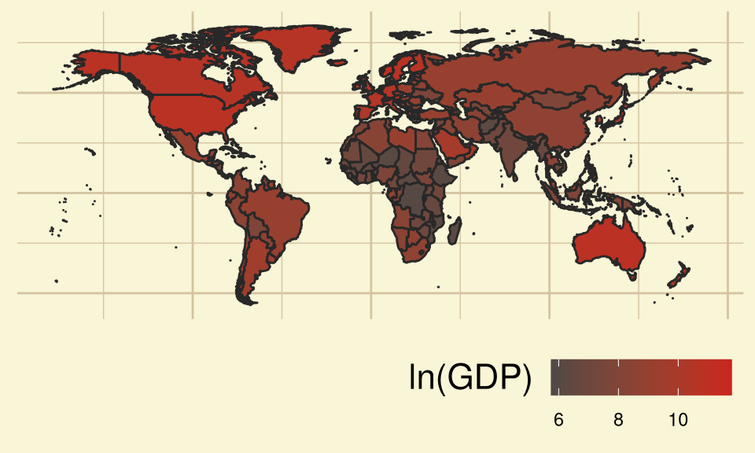
Introduction
Overview
Our Aim is to determine which features more directly affect the Life Expectation of the citizens.
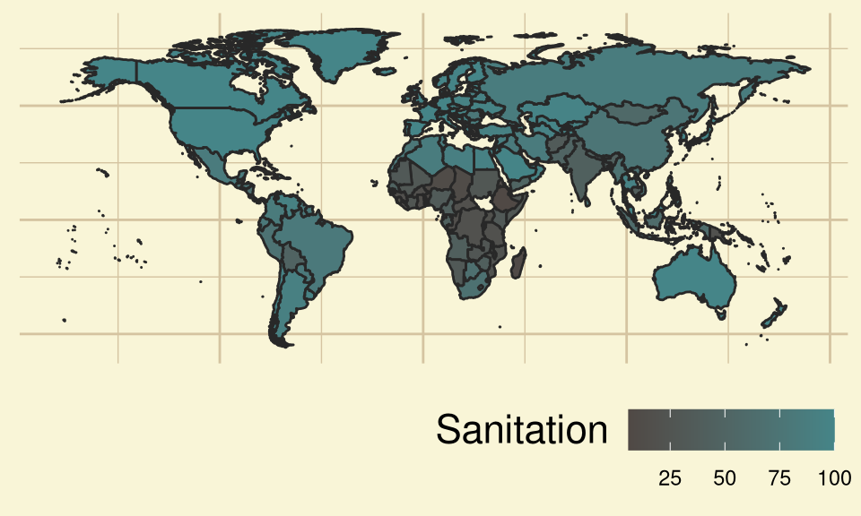
\[ ~ \]
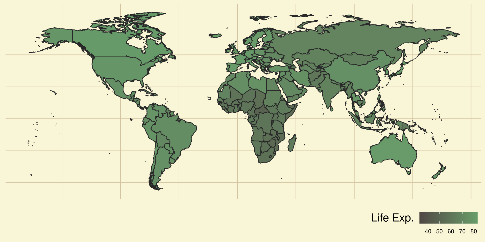
Variables
This presentation used various methods of Bivariate Analysis to infer relationship between various features of Nations.
log of GDP per capita: Logarithm (base \(e\)) of Gross Domestic Product (in $) per citizen. Adjusted for Inflation. [lngdp]
The Gross Domestic Product per capita of a country basically tells about the wealth of the citizens of the country.
Sanitation Access %: Percentage of people using at least basic Sanitation facilities, not shared with other households. [snt]
Sanitation of oneself is one of the basic tasks of a human being. We know poor sanitation is linked to transmission of diarrheal diseases such as cholera and dysentery, as well as typhoid, intestinal worm infections and polio which directly affect the health of an individual.
Life Expectancy: The average number of years a newly born child would live, provided current mortality patterns hold. [lfx]
Life expectancy is calculated based on the assumption that probability of death at a certain age stays constant in future. Hence we Life Expectation as a measurable proxy for Health.
Data
script.dir <- getSrcDirectory(function(x) {x})
setwd(script.dir)
numerise = function(x){
x[grepl("k$", x)] <- as.numeric(sub("k$", "", x[grepl("k$", x)]))*10^3
x <- as.numeric(x)
return(x)
}
d1_raw = read.csv(file.path(".","Data","gdp.csv"), fileEncoding = 'UTF-8-BOM')
d2_raw = read.csv(file.path(".","Data","sanitation.csv"), fileEncoding = 'UTF-8-BOM')
d3_raw = read.csv(file.path(".","Data","life_expectancy.csv"), fileEncoding = 'UTF-8-BOM')
yearname = "X2010"
d1 = d1_raw[!is.na(numerise(d1_raw[, yearname])),][,c("country", yearname)]
colnames(d1)[2] = "lngdp"
d2 = d2_raw[!is.na(numerise(d2_raw[, yearname])),][,c("country", yearname)]
colnames(d2)[2] = "snt"
d3 = d3_raw[!is.na(numerise(d3_raw[, yearname])),][,c("country", yearname)]
colnames(d3)[2] = "lfx"
dtemp = merge(x = d1, y = d2, by = "country")
d = merge(x = dtemp, y = d3, by = "country")
d$lngdp = log(numerise(d$lngdp))
write.csv(d, "./Data/assembled.csv")
kable(head(d, 6L))| country | lngdp | snt | lfx |
|---|---|---|---|
| Afghanistan | 6.265301 | 34.9 | 60.5 |
| Albania | 8.183118 | 95.2 | 78.1 |
| Algeria | 8.273847 | 87.0 | 74.5 |
| Andorra | 10.454495 | 100.0 | 81.8 |
| Angola | 8.291547 | 41.1 | 60.2 |
| Antigua and Barbuda | 9.546813 | 86.3 | 75.9 |
FREE DATA FROM UN, WORLD BANK, WHO, IMHE VIA GAPMINDER.ORG, CC-BY LICENSE.
Elementary Univariate Analysis
Measures of Central Tendency
Mean or Arithmetic Mean \(\bar{x}\), Median \(\operatorname{median}(x)\) and Mode \(\operatorname{mode}(x)\) are some measures of central tendency in the sample.
Formulae
\[ \begin{aligned} x = \{x_1, x_2, \ldots,x_{n-1}, x_n\} && \operatorname{mean}(x)=\bar{x} = \frac{1}{n} \sum _{i=1}^{n}(x_{i}) \end{aligned} \]\[ \begin{aligned} \operatorname{median}(x)= \frac{x_{\lfloor\frac{n+1}{2}\rfloor}+x_{\lfloor\frac{n+2}{2}\rfloor}}{2} && \operatorname{mode}(x) = x_i \text{ s.t. } \operatorname{Pr}(x_i) = \operatorname{sup}(\operatorname{Pr}(x)) \end{aligned} \]
Note: \(f_i\) is the frequency of the ith observation. \(x_{(i)}\) is the ith largest observation.
getmode <- function(v) {
uniqv <- unique(v)
freq = max(tabulate(match(v, uniqv)))
res = uniqv[which.max(tabulate(match(v, uniqv)))]
if (freq == 1) res = NULL
return(res)
}
d_central = data.frame(
row.names = "Variable",
Variable = c(
"*ln(GDP)*",
"*Sanitation*",
"*Life Exp.*"
),
Mean = c(
mean(d$lngdp),
mean(d$snt),
mean(d$lfx)
),
Median = c(
median(d$lngdp),
median(d$snt),
median(d$lfx)
),
Mode = c(
getmode(d$lngdp),
getmode(d$snt),
getmode(d$lfx)
)
)
kable(
d_central,
col.names = c(
"$\\quad \\quad \\bar{x}$",
"$\\operatorname{median}(x)$",
"$\\operatorname{mode}(x)$"
),
digits=5
)| \(\quad \quad \bar{x}\) | \(\operatorname{median}(x)\) | \(\operatorname{mode}(x)\) | |
|---|---|---|---|
| ln(GDP) | 8.54124 | 8.48673 | 9.23014 |
| Sanitation | 72.43857 | 85.60000 | 100.00000 |
| Life Exp. | 70.54603 | 72.40000 | 73.20000 |
\(~\)
- Notice that mode of Sanitation is 100. Thus a large number of countries have universal access to basic sanitation infrastructure.
Measures of Dispersion
Range \(\operatorname{range}(x)\), Semi-Interquartile Range \(\operatorname{SIR}(x)\), Mean Deviation about x’ \(\operatorname{MD}_{(x')}(x)\), Variance \(s_x^2\), Standard Deviation \(s_x\) are some measures of dispersion in the sample.
Formulae
\[ \begin{aligned} \operatorname{range}(x)=|x_{(n)} - x_{(1)}| && \ Q_1 = \operatorname{median}(x_{(1)}, \ldots ,x_{(\lfloor \frac{n+1}{2} \rfloor)}) && \end{aligned} \] \[ \begin{aligned} \ Q_3 = \operatorname{median}(x_{(\lfloor \frac{n+2}{2} \rfloor)}, \ldots , x_{(n)}) && \operatorname{MD}_{(x')}(x) = \operatorname{mean}(|x_i-x'|) \end{aligned} \] \[ \begin{aligned} \operatorname{SIR}(x)=\frac{|Q_1-Q_3|}{2} && s_x = \sqrt{\operatorname{mean}([x_i - \bar{x}]^2)} && s^2_x= (s_x)^2 \end{aligned} \]
getmd = function(x, center = mean(x)){
md = mean(
abs(
x - rep(center, length(x))
)
)
return(md)
}
d_disp = data.frame(
row.names = "Variable",
Variable = c(
"*ln(GDP)*",
"*Sanitation*",
"*Life Exp.*"
),
Range = c(
max(d$lngdp) - min(d$lngdp),
max(d$snt) - min(d$snt),
max(d$lfx) - min(d$lfx)
),
SIR = c(
IQR(d$lngdp)/2,
IQR(d$snt)/2,
IQR(d$lfx)/2
),
MD = c(
getmd(d$lngdp),
getmd(d$snt),
getmd(d$lfx)
),
variance = c(
(sd(d$lngdp))^2,
(sd(d$snt))^2,
(sd(d$lfx))^2
),
SD = c(
sd(d$lngdp),
sd(d$snt),
sd(d$lfx)
)
)
kable(
d_disp,
col.names = c(
"$\\operatorname{range}(x)$",
"$\\operatorname{SIR}(x)$",
"$\\operatorname{MD}_{(\\bar{x})}(x)$",
"$\\quad \\quad \\quad \\quad s_x^2$",
"$\\quad \\quad \\quad \\quad s_x$"
),
digits=5
)| \(\operatorname{range}(x)\) | \(\operatorname{SIR}(x)\) | \(\operatorname{MD}_{(\bar{x})}(x)\) | \(\quad \quad \quad \quad s_x^2\) | \(\quad \quad \quad \quad s_x\) | |
|---|---|---|---|---|---|
| ln(GDP) | 6.04435 | 1.06914 | 1.17229 | 2.01791 | 1.42053 |
| Sanitation | 94.03000 | 24.65000 | 25.50487 | 872.29346 | 29.53461 |
| Life Exp. | 50.80000 | 6.00000 | 6.98712 | 75.33494 | 8.67957 |
\(~\)
- We can compare \(s_x\) to \(\bar{x}\) and observe that there is a high variation in Sanitation amongst countries.
- GDP per capita varies drastically across the \(e\)6.044354 range.
Measures of Shape
Coefficients of Skewness \(g_1\) and Kurtosis \(g_2\) describe the symmetry and extremity of tails of the sample distribution.
Formulae
\[ \begin{aligned} m_k = \operatorname{mean}([x-\bar{x}]^k) && g_1 = \frac{m_3}{{m_2}^{\frac{3}{2}}} && g_2 = \frac{m_4}{{m_2}^2} \end{aligned} \]
d_shape = data.frame(
row.names = "Variable",
Variable = c(
"*ln(GDP)*",
"*Sanitation*",
"*Life Exp.*"
),
Skewness = c(
skewness(d$lngdp),
skewness(d$snt),
skewness(d$lfx)
),
Kurtosis = c(
kurtosis(d$lngdp),
kurtosis(d$snt),
kurtosis(d$lfx)
)
)
kable(
d_shape,
col.names = c(
"Skewness $g_1$",
"Kurtosis $g_2$"
),
digits=5
)| Skewness \(g_1\) | Kurtosis \(g_2\) | |
|---|---|---|
| ln(GDP) | 0.09619 | 2.14435 |
| Sanitation | -0.85989 | 2.27111 |
| Life Exp. | -0.87903 | 4.02465 |
\[ ~ \]
ln(GDP) is nearly symmetrical, while Sanitation and Life Exp. are highly left-skewed.
This indicates majority of countries have good sanitation system and citizen health.
ln(GDP) and Sanitation are platykurtic, while Life Exp. is leptokurtic.
Density Plot
labelfunction = as_labeller(c(
`lngdp` = "log of GDP per capita",
`snt` = "Sanitation Access %",
`lfx` = "Life Expectancy"
)
)
ggplot(stack(d[2:4]), mapping = aes(x = values))+
geom_density(aes(color=ind), linewidth=rel(1.5))+
labs(
x=NULL,
y=NULL
)+
mytheme+
mycolor+
facet_wrap(~ind, scales="free", labeller = labelfunction, ncol=1)+
theme(legend.position="none",
strip.text.x = element_text(size = rel(1.5))
)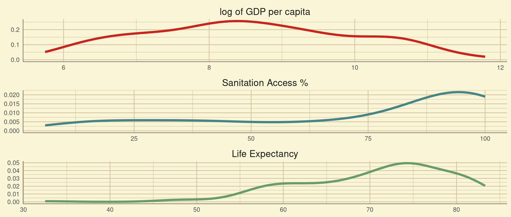
- The density of the log of GDP per capita is symmetric as inferred previously. The other two density plots appear left skewed as supported by the negative skewness.
Box Plot
Box plots help us detect potential outliers. They also help us in estimating location and skewness of the distribution.
plot1 = ggplot(stack(d[2:4]), mapping = aes(y = values, x = ind))+
geom_boxplot(aes(fill=ind), alpha=0.6)+
labs(
x=NULL,
y=NULL
)+
mytheme+
facet_wrap(vars(ind), scales="free", labeller = labelfunction)+
theme(axis.text.x=element_blank(),
legend.position="none",
strip.text.x = element_text(size = rel(1.5)),
panel.grid.minor.x = element_blank(),
panel.grid.major.x = element_blank()
)+
scale_color_manual(
values=c(
"#cc241d",
"#458588",
"#689d6a",
"#d65d0e"
),
aesthetics="fill"
)
ggplotly(plot1)- We observe one potential outlier in the Life Expectancy dataset. It is Haiti at 32.5 years. It is due to a cholera outbreak and an earthquake increasing the mortality rate in the nation in 2010.
Scatter Plot
A Scatter plot helps us estimate the type of relationship between variables.
sctrplot = function(
d, x_map, y_map,
x_lab=waiver(), y_lab=waiver(),
title=waiver()
){
plot1 = ggplot(d, mapping = aes(x = x_map, y = y_map, text = country))+
geom_point(
alpha=0.6
)+
mytheme+
labs(
x=x_lab,
y=y_lab,
title=title
)
plot2 = ggplotly(plot1,
tooltip = "text")
return(plot2)
}Sanitation vs. log of GDP
- We observe from the scatter plot that the correlation between ln(GDP) and sanitation access appears to be mostly Linear for countries with low ln(GDP).
- Also, the sanitation access is very close to 100% for countries with high ln(GDP).
Life Expectancy vs. log of GDP
- We can see that except for some countries with very low life expectancies, the correlation between the variables is appearing to be linear.
Life Expectation vs. Sanitation
- We can see that the correlation appears to be linear between life expectation and sanitation. We also observe that there is clustering around the top right side of the plot, which is supported by the box plots of both the distributions.
Inferences
We observe a fairly strong positive Linear Correlation between the three features in the Scatter Plot.
We subsequently compute the Correlation Coefficients to quantify the Linear Correlation.
Bivariate Statistics
Correlation Coefficients
Correlation is any relationship, causal or spurious, between two random variables \(x\), \(y\).
Pearson’s \(r\), Spearman’s \(r_s\), and Kendall’s \(\tau\) are some correlation coefficients. These estimate the linear correlation between two variables.
d_cor = data.frame(
row.names = "Variable",
Variable = c(
"*Sanitation vs. ln(GDP)*",
"*Life Exp. vs. ln(GDP)*",
"*Life Exp. vs. Sanitation*"
),
Pearson = c(
cor(d$snt, d$lngdp, method="pearson"),
cor(d$lfx, d$lngdp, method="pearson"),
cor(d$lfx, d$snt, method="pearson")
),
Spearman = c(
cor(d$snt, d$lngdp, method="spearman"),
cor(d$lfx, d$lngdp, method="spearman"),
cor(d$lfx, d$snt, method="spearman")
),
Kendall = c(
cor(d$snt, d$lngdp, method="kendall"),
cor(d$lfx, d$lngdp, method="kendall"),
cor(d$lfx, d$snt, method="kendall")
)
)
avg_cor = round(mean(d_cor[, 1]), digits=2)
kable(
d_cor,
digit = 5,
col.names = c(
"*Pearson's* $r$",
"*Spearman's* $r_s$",
"*Kendall's* $\\tau$"
)
)| Pearson’s \(r\) | Spearman’s \(r_s\) | Kendall’s \(\tau\) | |
|---|---|---|---|
| Sanitation vs. ln(GDP) | 0.80659 | 0.85920 | 0.67458 |
| Life Exp. vs. ln(GDP) | 0.77229 | 0.81639 | 0.62168 |
| Life Exp. vs. Sanitation | 0.81351 | 0.83513 | 0.63744 |
\[ ~ \]
- We observe a positive correlation between all the three variables.
- The correlation coefficients are close to +1, thus the correlation is strong.
Covariance and Correlation Matrices
Covariance \(\operatorname{cov}(x, y)\) is a measure of the joint variability of two random variables \(x\), \(y\).
Formulae
\[ \begin{aligned} \operatorname {cov} (x,y)={\frac {\sum _{i=1}^{n}(x_{i}-\bar{x})(y_{i}-\bar{y})}{n}} && r_{x,y}= \frac{\operatorname{cov}(x,y)}{s_x s_x} \end{aligned} \]
cov_mat = cov(d[, 2:4])
kable(cov_mat, digits=5)| lngdp | snt | lfx | |
|---|---|---|---|
| lngdp | 2.01791 | 33.84045 | 9.52202 |
| snt | 33.84045 | 872.29346 | 208.54155 |
| lfx | 9.52202 | 208.54155 | 75.33494 |
\[A_{i,j} = \operatorname{cov}(x_i, x_j)\]
cor_mat = cor(d[, 2:4])
kable(cor_mat, digits=5)| lngdp | snt | lfx | |
|---|---|---|---|
| lngdp | 1.00000 | 0.80659 | 0.77229 |
| snt | 0.80659 | 1.00000 | 0.81351 |
| lfx | 0.77229 | 0.81351 | 1.00000 |
\[A_{i,j} = r_{x_i, x_j}\]
Inferences
We observe fairly good Linear Correlation of around 0.8 between all three variables. Thus a slight increase in ln(GDP), Sanitation or Life expectancy tends to accompany rise in the other two features increasing too.
Let us try to create a Linear Model to best estimate the relationship between the three variables.
Regression
Simple Linear Regression
Simple Univariate Linear Regression is a method for estimating the relationship \(y_i=f(x_i)\) of a response variable \(y\) with a predictor variable \(x\), as a line that closely fits the \(y\) vs. \(x\) scatter plot.
\[ y_i = \hat{a} + \hat{b} x_i + e_i \]
Where \(\hat{a}\) is the intercept, \(\hat{b}\) is the slope, and \(e_i\) is the ith residual error. We aim to minimize \(e_i\) for better fit.
Ordinary Least Squares
Ordinary Least squares method reduces \(e_i\) by minimizing error sum of squares \(\sum{{e_i}^2}\).
Coefficient of Determination \(R^2\) is the proportion of the variation in \(y\) predictable by the model.
p-value of an estimated coefficient denotes the reliability of the estimate.
Formulae
\[ \begin{aligned} \hat{b} = r\frac{s_y}{s_x} && \hat{a} = \bar{y} - \hat{b}\bar{x} && R^2 = 1 - \frac{\sum{{e_i}^2}}{\sum{(y-\bar{y}})^2} \end{aligned} \]
olssmry = function(
d, x_map, y_map,
x_lab=waiver(), y_lab=waiver(),
title=waiver()
){
model = lm(formula=y_map~x_map)
smry = summary(model, signif.stars=TRUE)
star = symnum(smry$coefficients[2, 4],
corr = FALSE, na = FALSE,
cutpoints = c(0, 0.001, 0.01, 0.05, 0.1, 1),
symbols = c("***", "**", "*", ".", " ")
)
smryvec = c(
round(as.numeric(model$coefficients["(Intercept)"]), digits = 5),
round(as.numeric(model$coefficients["x_map"]), digits = 5),
round(smry$r.squared, digits = 5),
paste(signif(smry$coefficients[2, 4], digits = 5), star)
)
return(smryvec)
}
olstab = t(data.frame(
SvG = olssmry(d, d$lngdp, d$snt),
LvG = olssmry(d, d$lngdp, d$lfx),
LvS = olssmry(d, d$snt, d$lfx)
))
row.names(olstab) = c(
"*Sanitation vs. ln(GDP)*",
"*Life Exp. vs. ln(GDP)*",
"*Life Exp. vs. Sanitation*"
)
avg_r2 = round(mean(as.numeric(olstab[, 3])),digits = 1)
kable(
olstab,
digit = 5,
col.names=c(
"$\\hat{a}$",
"$\\hat{b}$",
"$R^2$",
"*p-value* of $\\hat{b}$"
)
)| \(\hat{a}\) | \(\hat{b}\) | \(R^2\) | p-value of \(\hat{b}\) | |
|---|---|---|---|---|
| Sanitation vs. ln(GDP) | -70.79844 | 16.77006 | 0.65059 | 1.4431e-44 *** |
| Life Exp. vs. ln(GDP) | 30.24203 | 4.71876 | 0.59643 | 1.0702e-38 *** |
| Life Exp. vs. Sanitation | 53.22795 | 0.23907 | 0.6618 | 6.7883e-46 *** |
- The \(R^2\) values of all three models are all near 0.6 . Thus the models explain the variation in the response \(y_i\) fairly well.
- The positive \(\hat{b}\) estimates indicate positive correlation in all three cases.
Least Absolute Deviation
Least absolute Deviation method reduces \(e_i\) by minimizing the sum of absolute deviations \(\sum{|e_i|}\).
ladsmry = function(
d, x_map, y_map,
x_lab=waiver(), y_lab=waiver(),
title=waiver()
){
model = rq(formula=y_map~x_map)
smry = summary(model)
smryvec = c(
as.numeric(model$coefficients[1]),
as.numeric(model$coefficients[2])
)
return(smryvec)
}
olstab = t(data.frame(
SvG = ladsmry(d, d$lngdp, d$snt),
LvG = ladsmry(d, d$lngdp, d$lfx),
LvS = ladsmry(d, d$snt, d$lfx)
))
row.names(olstab) = c(
"*Sanitation vs. ln(GDP)*",
"*Life Exp. vs. ln(GDP)*",
"*Life Exp. vs. Sanitation*"
)
kable(
olstab,
digit = 5,
col.names=c(
"$\\hat{a}$",
"$\\hat{b}$"
)
)| \(\hat{a}\) | \(\hat{b}\) | |
|---|---|---|
| Sanitation vs. ln(GDP) | -71.23153 | 16.80472 |
| Life Exp. vs. ln(GDP) | 31.99047 | 4.61340 |
| Life Exp. vs. Sanitation | 53.73041 | 0.23963 |
Line Fitting
Plotting the estimated Linear Models on the Scatter Plots.
linearplot = function(
d, x_map, y_map,
x_lab=waiver(), y_lab=waiver(),
title=waiver()
){
olsvec = round(as.numeric(olssmry(d, x_map, y_map)[1:3]), digit=5)
ladvec = round(ladsmry(d, x_map, y_map), digit=5)
ols_str = paste("Ordinary Least Squares", "<br>",
"y =", olsvec[1], "+", olsvec[2], "x")
lad_str = paste("Least Absolute Deviation", "<br>",
"y =", ladvec[1], "+", ladvec[2], "x")
plot1 = ggplot(d, mapping = aes(x = x_map, y = y_map))+
geom_point(
alpha=0.6,
aes(text = country)
)+
mytheme+
labs(
x= x_lab,
y=y_lab,
title=title,
parse=TRUE
)+
geom_smooth(
method="lm",
formula=y~x,
se=FALSE,
aes(color = ols_str, text = ols_str)
)+
geom_smooth(
method="rq",
formula=y~x,
se=FALSE,
aes(color = lad_str, text = lad_str)
)+
labs(
color="Linear Model"
)+
scale_color_manual(
values=c(
"#cc241d80",
"#45858880",
"#689d6a80",
"#d65d0e80"
)
)
plot2 = ggplotly(plot1, tooltip = "text")
return(plot2)
}Sanitation vs. log of GDP
Life Expectancy vs. log of GDP
Life Expectancy vs. Sanitation
Inferences
Both OLS and LAD models fit the scatter plots very well. The OLS model is affected in the Life Expectancy plots due to the existence of Haiti as an outlier.
Our aim is to deduce which features more directly affect the Life Expectancy. Thus we should remove the effect of the other features when computing correlation.
Partial Correlation
Partial Correlation is the relationship between two variables \(x\), \(y\) of interest, after removing effect of some other related variable \(z\).
Formulae
\[ \begin{aligned} &x_i = \hat{a_x} + \hat{b_x} z_i + e_{x,i} && y_i = \hat{a_y} + \hat{b_y} z_i + e_{y,i} \\ &\Rightarrow r_{x,y;z} = r_{e_{x}, e_{y}} \end{aligned} \]
partcor = pcor(d[, 2:4])$estimate
pcortab = data.frame(
row.names = "Variable",
Variable = c(
"*Sanitation vs. ln(GDP)*",
"*Life Exp.$\\quad$ vs. ln(GDP)*",
"*Life Exp. vs. Sanitation*"
),
PCor = c(
partcor[2, 1],
partcor[3, 1],
partcor[3, 2]
)
)
kable(pcortab,
col.names = c(
"Partial Correlation"
))| Partial Correlation | |
|---|---|
| Sanitation vs. ln(GDP) | 0.4826925 |
| Life Exp.\(\quad\) vs. ln(GDP) | 0.3377892 |
| Life Exp. vs. Sanitation | 0.5075384 |
- We observe that the partial correlation between Life Exp. and Sanitation is higher than that of Life. Exp and ln(GDP).
Thus Life Expection is more directly improved by better Sanitaion access, than increase in wealth.
- We also note that there is fairly high partial correlation between Sanitation and ln(GDP).
This indicates that wealthier countries tend to improve their sanitation infrastructure.
Considerations
Time
numerise = function(x){
x[grepl("k$", x)] <- as.numeric(sub("k$", "", x[grepl("k$", x)]))*10^3
x <- as.numeric(x)
return(x)
}
d1_raw = read.csv(file.path(".","Data","gdp.csv"), fileEncoding = 'UTF-8-BOM')
d2_raw = read.csv(file.path(".","Data","sanitation.csv"), fileEncoding = 'UTF-8-BOM')
d3_raw = read.csv(file.path(".","Data","life_expectancy.csv"), fileEncoding = 'UTF-8-BOM')
years = 2000:2019
yearnames = paste0("X", years)
makedata = function(yearname){
d1 = d1_raw[!is.na(numerise(d1_raw[, yearname])),][,c("country", yearname)]
colnames(d1)[2] = "lngdp"
d2 = d2_raw[!is.na(numerise(d2_raw[, yearname])),][,c("country", yearname)]
colnames(d2)[2] = "snt"
d3 = d3_raw[!is.na(numerise(d3_raw[, yearname])),][,c("country", yearname)]
colnames(d3)[2] = "lfx"
dtemp = merge(x = d1, y = d2, by = "country")
d = merge(x = dtemp, y = d3, by = "country")
d$lngdp = log(numerise(d$lngdp))
return(d)
}How the years’ life expectancies and an year’s GDP correlate with.

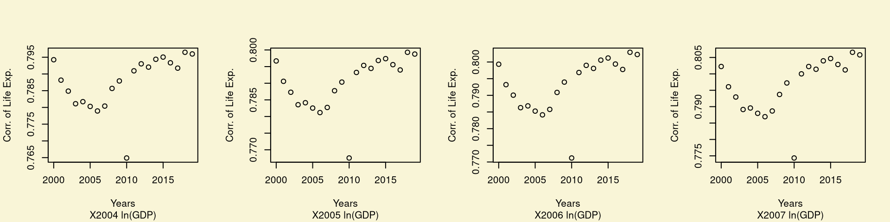
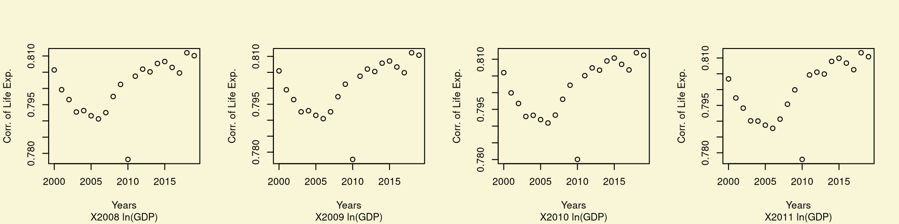
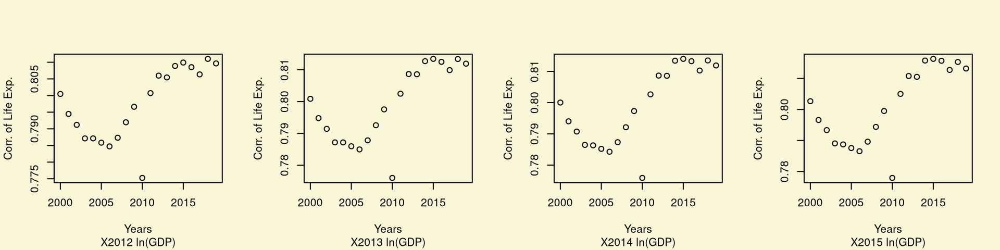
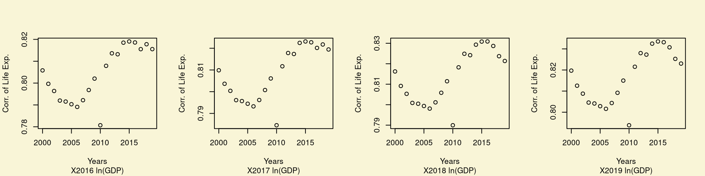
How the years’ life expectancies and an year’s Sanitation correlate with.

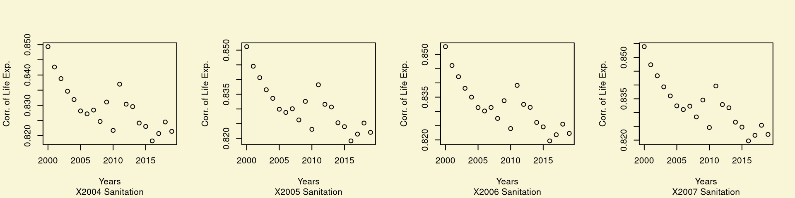


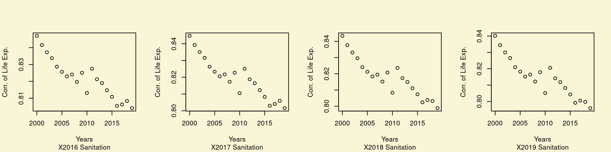
How an year’s life expectancies correlate with the years’ GDP.
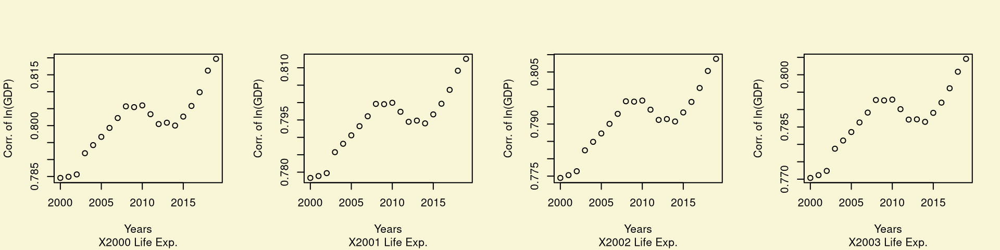
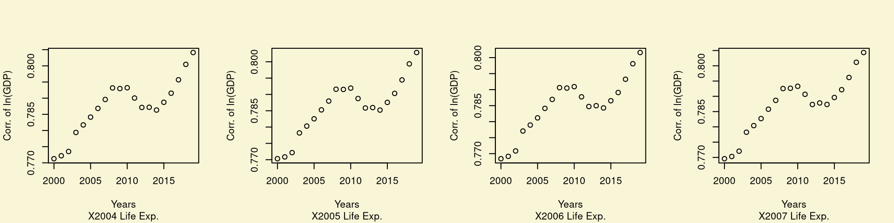


How an year’s life expectancies correlate with the years’ Sanitation.


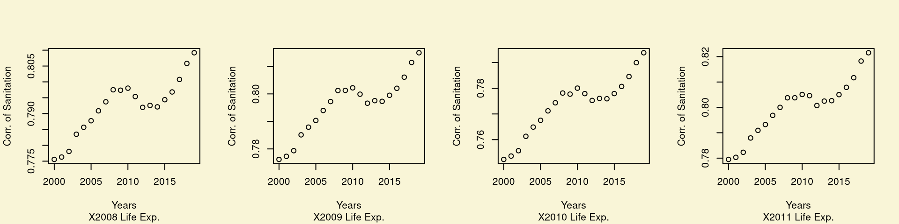
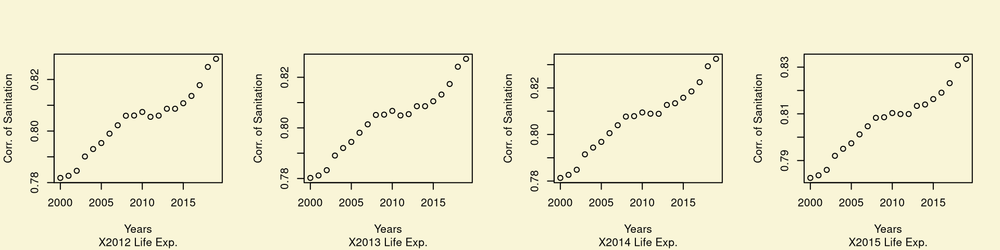

Thus our analysis is fairly robust with respect to variation in Time. Thus we only perform the analysis on the year 2010.
Raw GDP per capita
Sanitation vs GDP per capita
Life Expectancy vs GDP per capita
Scatter Plots of Sanitation or Life Exp. with respect to raw GDP are not linearly correlated. As this was beyond our scope of knowledge, we instead considered the log (base \(e\)) of GDP.
Thus in reality, rise in GDP provides diminishing returns in citizen health the wealthier a country is.
Conclusion
Thus we have observed that Life expectancy increases with rise in log of GDP per capita and Sanitation facility access. Life Expectancy is also more directly affected by increase in basic Sanitation access than with rise in log of GDP per capita.
Suggestions
Governments should consider that:
Focusing on better sanitation services leads to visibly better lifespan of the citizens.
Improvements in GDP per capita make practical improvements in sanitation and life expectancy only for poorer countries, due diminishing returns in the log scale.
Improvements to life expectancies once made, are fairly stable.
Notable Countries
Some countries had alarmingly low Life Expectancies:
The countries like the Central African Republic, Zimbabwe have very low life expectancies due to endemic poverty and weak governance, contributing to a dire health situation.
Haiti had a high child mortality rate in 2010 due to natural disasters and cholera outbreaks. This caused low Life expectancy for that year.

- Countries like Mozambique, Lesotho are experiencing increasing double burden of diseases characterized by an increase in the burden of non-communicable diseases as well as a high burden of communicable diseases.
- Also countries like Eswatini, Zambia also have a low life expectancy due to the outbreak of HIV.